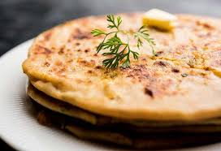
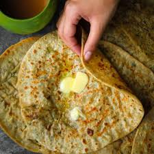

POTATO ONION PARATHA

INGREDIENTS
FOR DOUGH:
- 1 cup wheat flour / atta
- 2 tsp oil
- ½ tsp salt
- 1 cup water, to knead
FOR ALOO STUFFING:
- 2 potato / aloo, boiled & mashed
- 1 chilli, finely chopped
- ½ tsp coriander seeds, crushed
- ¼ tsp kashmiri red chilli powder
- ¼ tsp turmeric
- ¼ tsp cumin powder / jeera powder
- ½ tsp aamchur / dry mango powder
- ¼ tsp ajwain / carom seeds
- ½ tsp ginger paste
- 2 tbsp coriander, finely chopped
- ¼ tsp salt
- OTHER INGREDIENTS:
- ½ cup wheat flour/atta, to dust
7 tsp oil
It is a popular stuffed flatbread recipe
which is a perfect for lunch and dinner,
but can also be served for morning breakfast too.
INSTRUCTIONS
firstly, knead wheat dough by taking 2 cup wheat flour, 2 tsp oil, ½ tsp salt and 1 cup water.
further, in a large mixing bowl take 2 boiled and mashed potato.
add 1 chilli, ½ tsp crushed coriander seeds, ¼ tsp chilli powder, ¼ tsp turmeric, ¼ tsp cumin powder, ½ tsp aamchur, ¼ tsp ajwain, ½ tsp ginger paste, 2 tbsp coriander and ¼ tsp salt.
mix well making sure all the spices are combined well.
pinch a ball sized wheat dough and dust with some wheat flour.
further, roll it in a circle of about 5 to 5.5 inches in diameter.
stuff the stuffing and roll slightly thick.
cook the paratha to golden brown adding oil/ghee.
finally, serve hot aloo paratha with butter, sauce, raita or pickle.
THANKS FOR WATCHING